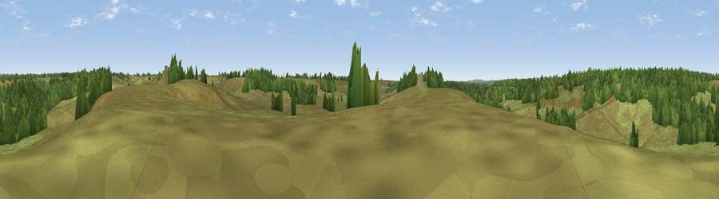

Viewpoint near Hale
#43720 in England · top 82% of its area beats it · near HaleWhere it is
The exact computed spot (SU 19075 16475). Click the marker for map links.
The view, rendered

A 360° render of this exact spot computed from the terrain model, tree cover and land cover — summer colours, afternoon light, calibrated against photographs of famous viewpoints. Real trees, hedges and buildings will differ in detail.
The panorama
Grey silhouette: terrain skyline in each direction (720 bearings, Earth curvature and refraction included). Dashed green: skyline with trees (+15 m) and buildings (+8 m) as obstacles. Blue strip: how far the ground is visible on each bearing.
Where the view opens
Wedge length = distance to the farthest visible ground on that bearing (vegetation-aware). Rings at 10, 25 and 50 km.
What fills the view
74% grassland · 25% woodland ·
Angular shares of the visible panorama (visual magnitude), not map area. Landscape diversity 0.27 (0–1 Shannon).
Key numbers
More beautiful places nearby
The staircase of upgrades: each row has a higher view potential than everything closer. Driving times are estimates from straight-line distance, calibrated against real road routing — check an actual route before setting out.
| Place | Direction | Drive | Score |
|---|---|---|---|
| Viewpoint near Godshill | SW · 1 km | ~3 min | 29.6 |
| Viewpoint near Godshill | S · 3 km | ~7 min | 34.9 |
| Viewpoint near Frogham | SSW · 3 km | ~7 min | 40.2 |
| Viewpoint near Redlynch | N · 6 km | ~13 min | 40.8 |
| Viewpoint near West Grimstead | NNE · 8 km | ~16 min | 50.6 |
| Viewpoint near West Grimstead | N · 8 km | ~17 min | 54.6 |
| Viewpoint near Martin | W · 15 km | ~26 min | 58.4 |
| Viewpoint near Martin | W · 15 km | ~26 min | 64.6 |
50.94740, -1.72985 · source: screening · position refined by local search. Computed location — check access rights before visiting.